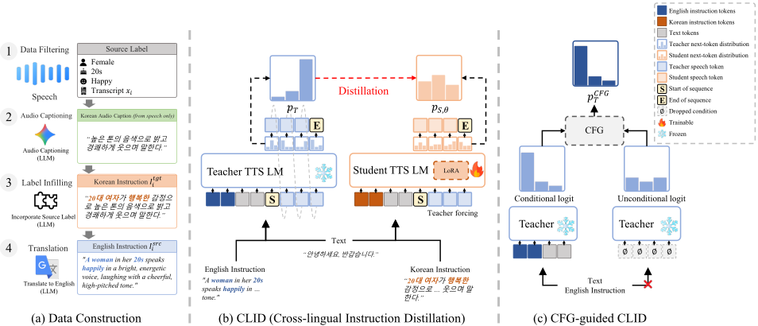

Overview
초록
빠르게 발전하고 있는 지시문 기반 음성 합성(TTS) 시스템은 감정이 풍부한 음성을 생성하기 위해 여전히 표현적 음성과 지시문이 짝을 이루는 데이터셋에 의존합니다. 이러한 데이터 구축 부담을 줄이기 위해, 사전 학습된 TTS 모델의 지시문 수행 능력을 서로 다른 지시문 언어 사이에서 전이하는 교차 언어 지시문 증류(Cross-Lingual Instruction Distillation, CLID) 방법을 제안합니다. CLID는 동일한 발화 텍스트에 대해 의미가 정렬된 영어·한국어 지시문을 사용하여 교사 모델의 음성 토큰 분포를 학생 모델에 증류합니다. 또한 CFG를 적용해 교사 모델의 목표 분포를 구성하고 이를 한국어 SFT 학생 모델에 증류함으로써, 감정 제어 능력과 음성 품질을 개선한 CLID-TTS를 구축합니다. 실험 결과, CLID는 한국어 지시문과 음성이 짝지어진 데이터 없이도 한국어 지시문 수행 능력을 향상시켰으며, CLID-TTS는 감정 분류 정확도와 음성 명료도를 추가로 개선했습니다.
Abstract
Despite rapid progress, instruction-guided text-to-speech (TTS) systems still rely on paired expressive speech-instruction datasets for emotional speech generation. To alleviate this burden, we introduce a cross-lingual instruction distillation (CLID) method, which transfers the instruction-following capability of a pretrained TTS model across different instruction languages. Using semantically aligned English-Korean instructions with the same spoken text, CLID distills the teacher’s speech-token distributions into a student. We further apply CFG to construct guided teacher targets and distill them into a Korean-SFT student, yielding CLID-TTS with improved emotion controllability and speech quality. Experimental results demonstrate that CLID improves Korean instruction following without paired Korean instruction-speech data, while CLID-TTS further improves emotion classification accuracy and speech intelligibility.
Model Overview

Objective and Subjective Emotion Classification
Row-normalized confusion matrices compare objective emotion2vec (E2V) predictions with subjective listener judgments for all six systems.